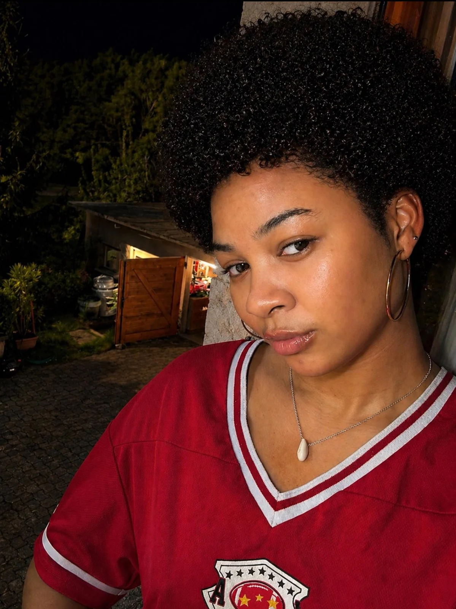

Mon histoire
Moi, c'est Flore.
J'ai longtemps souffert d'acné hormonale. Une acné qui m'a laissé des taches. Des taches qui m'en laissent encore aujourd'hui d'ailleurs.
Je ne vais pas te mentir en te disant que tout est parti du jour au lendemain. J'en souffre encore. Mais aujourd'hui, je parviens à maintenir ma peau grâce à ces deux produits.
C'est devenu ma routine.
Mon entretien.
N'oubliez pas
Tout comme le corps a besoin d'être entretenu, le visage aussi a besoin d'être entretenu.
À vous, qui souffrez aussi d'acné et surtout de taches, je veux vous dire : je suis là pour vous.
Je suis là parce que je suis passée par là. Et je continue de maintenir, jour après jour, comme vous.
On avance ensemble.
On ne cache plus notre peau, on en prend soin.
Avec amour,
Flore · FLORÉA SKIN